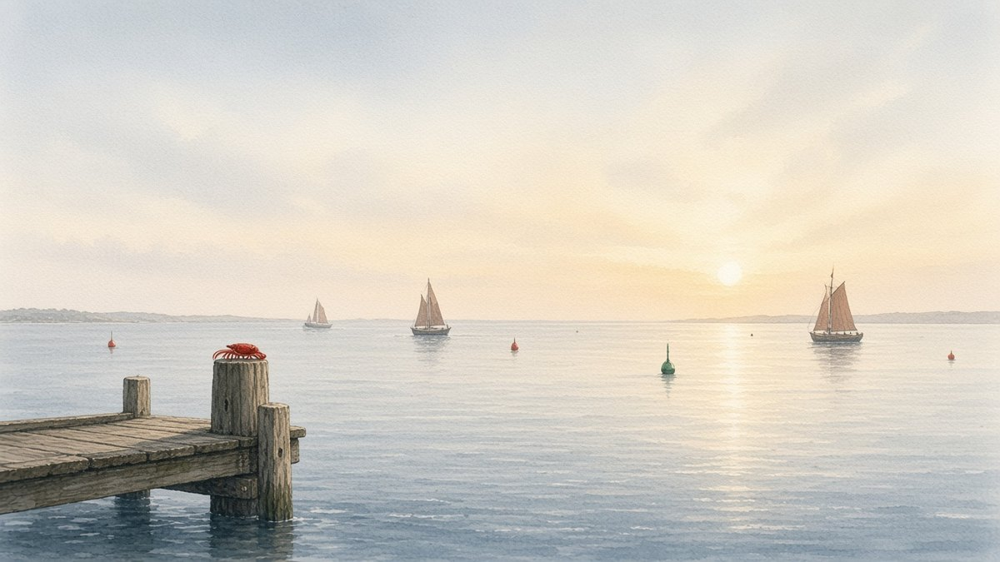

Lobsymiddelbare school
Lobsymiddelbare schoolH4 · P6S-TBU
Lobsymiddelbare school
Kijk welk profiel en welke vervolgopleiding passen bij wat je wilt worden. Je kiest zelf, samen met je mentor.
Het is een lange route, maar je hebt al een goede start. Vraag je mentor wat je nu al kunt doen.
Past bij: onderzoeken en helpen, dieren en natuur.